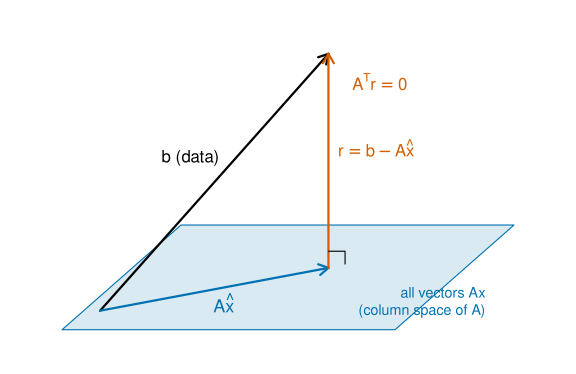
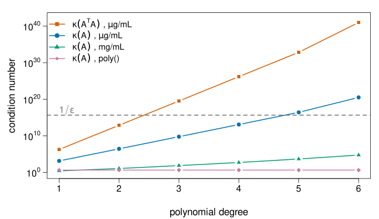
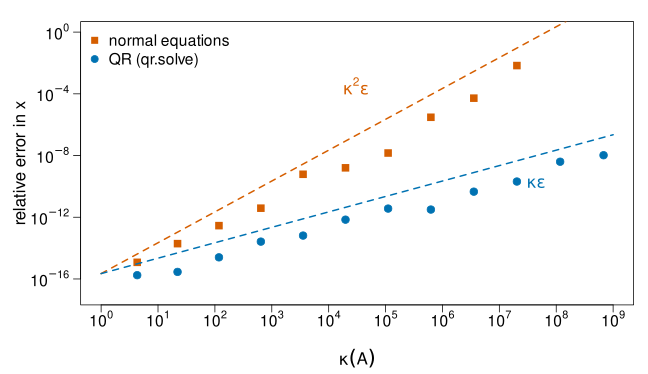
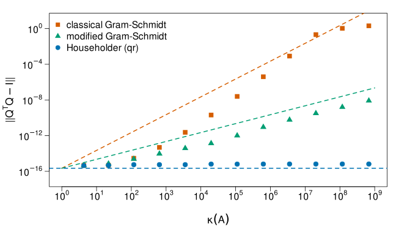
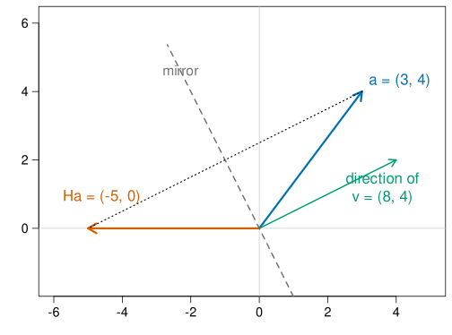

Part 3 solved square systems A\mathbf x = \mathbf b. A calibration curve gives more equations than unknowns: 21 measurements, 2 parameters. No \mathbf x satisfies them all.
Least squares picks the \mathbf x that makes the sum of squared residuals smallest. Geometrically: a projection.
The textbook route, the normal equationsA^TA\mathbf x = A^T\mathbf b, is short but squares the condition number: it can lose twice as many digits as necessary.
The route software takes is the QR factorisation (Gram–Schmidt in principle, Householder reflections in practice). It loses only what the problem itself forces.
Biology: qPCR and protein-assay standard curves; a polynomial calibration in µg/mL that is so badly conditioned that R refuses to solve it.
You have used lm(). This is what is inside it.
A biology problem first: the qPCR standard curve
A 10-fold dilution series of a standard, 10^1 to 10^7 copies, each in triplicate. Theory: \text{Cq} = x_1 + x_2 \log_{10} N.
A is the design matrix (in R: model.matrix). One row per measurement, one column per parameter.
m = 21 rows, n = 2 columns: overdetermined. The first three rows already disagree (34.52, 34.69, 34.48 for the same x), so there is no exact solution.
We need a rule that picks the “best” \mathbf x.
Residuals and the least-squares criterion
For any trial \mathbf x, the residual vector is what the model misses:
\mathbf r = \mathbf b - A\mathbf x, \qquad r_i = \text{Cq}_i - (x_1 + x_2 \log_{10} N_i)
Least squares: choose \mathbf x to minimise \;\|\mathbf r\|^2 = \sum_i r_i^2.
trial \mathbf x
r_1, r_2, r_3
\sum_i r_i^2 (all 21)
(38, -3.3)
-0.18,\; -0.01,\; -0.22
1.23
(37.98, -3.334), the fit
-0.13,\; \phantom{-}0.04,\; -0.17
0.627
Why squares: smooth (we can differentiate), and it is the maximum-likelihood fit for independent Gaussian noise of equal size.
The minimum is not zero. Its size, 0.627 over 19 degrees of freedom, estimates the noise: \hat\sigma = \sqrt{0.627/19} = 0.18 cycles.
Least squares is a projection

A\mathbf x can only reach the column space of A (here a plane in \mathbb R^{21}). \mathbf b sticks out of it.
The closest point A\hat{\mathbf x} is the orthogonal projection of \mathbf b: the residual is perpendicular to every column of A: A^T \mathbf r = \mathbf 0.
The normal equations
Put \mathbf r = \mathbf b - A\mathbf x into A^T\mathbf r = \mathbf 0:
A^TA\,\mathbf x = A^T\mathbf b \qquad (\text{a square } n\times n \text{ system})
For the qPCR data (\sum 1 = 21, \sum \log_{10} N_i = 84, \sum (\log_{10} N_i)^2 = 420):
\kappa(A) = \dfrac{\text{largest stretch}}{\text{smallest stretch}} = \dfrac{\max \|A\mathbf v\|}{\min \|A\mathbf v\|} over unit vectors \mathbf v. This works for rectangular A too.
Rule of thumb: solving with A loses about \log_{10}\kappa(A) digits of the 16 we have.
\kappa \ge 1/\varepsilon \approx 4.5\times10^{15}: as good as singular in double precision.
solve estimates 1/\kappa(A^TA) \approx 3\times10^{-20} < \varepsilon and stops. numpy’s solve does not check, and returns numbers without a warning.
lm(a562 ~ conc + I(conc^2) + I(conc^3)) gives the QR numbers.
Two sources of ill-conditioning

Units. Measure x in mg/mL (conc / 1000): the cubic’s \kappa drops from 5.8\times10^9 to 72. Same fit, rescaled coefficients (c_k \to 1000^k c_k).
Look-alike columns. What is left (72, 506, 4624, …) still grows with degree: x^k and x^{k+1} look alike. poly() builds orthogonal polynomial columns: \kappa = 4.2 at any degree.
Genuine ill-conditioning: digits lost
Polynomials of degree 1–12 on 50 points in [0, 1] (no unit problem), data with known coefficients \mathbf x = (1, \dots, 1):

Normal equations follow \kappa^2\varepsilon; QR follows \kappa\varepsilon. At \kappa = 2\times10^7: error 7\times10^{-3} vs 2\times10^{-10}.
From degree 11 solve refuses; from degree 13 qr.solve does too (its rank tolerance is 10^{-7}).
With \delta = 10^{-8}: \delta^2 = 10^{-16} < \varepsilon/2, so 1 + \delta^2 is stored as 1. A has rank 2, the computed A^TA is singular.
d <-1e-8A <-rbind(c(1, 1), c(d, 0), c(0, d)); b <-c(2, d, d) # exact x = (1, 1)solve(crossprod(A), crossprod(A, b))# Error in solve.default(crossprod(A), crossprod(A, b)) :# Lapack routine dgesv: system is exactly singular: U[2,2] = 0qr.solve(A, b, tol =1e-12)# [1] 1 1
The idea of QR
Write A = QR with
Q: m\times n with orthonormal columns, Q^TQ = I (perpendicular, length 1);
R: n\times nupper triangular.
Then the normal equations simplify without ever forming A^TA:
A^TA\mathbf x = A^T\mathbf b \;\Leftrightarrow\; R^T\underbrace{Q^TQ}_{I}R\,\mathbf x = R^TQ^T\mathbf b \;\Leftrightarrow\; R\,\mathbf x = Q^T\mathbf b
Q does not stretch: \|Q\mathbf y\| = \|\mathbf y\|. So \|A\mathbf v\| = \|R\mathbf v\| and \kappa(R) = \kappa(A), not squared.
QR in R
A <-cbind(1, logN) # qPCR againf <-qr(A)R <-qr.R(f); R# logN# [1,] -4.582576 -18.330303# [2,] 0.000000 9.165151backsolve(R, crossprod(qr.Q(f), cq))[, 1] # R x = Q^T b# [1] 37.981429 -3.333929qr.solve(A, cq) # the same in one call
qr() returns the factorisation in compact form; qr.Q, qr.R unpack it. backsolve solves an upper triangular system.
r_{11} = -\sqrt{21}: the length of the column of ones (the sign is a convention).
Gram–Schmidt by hand
Make the columns orthonormal one at a time. A with columns \mathbf a_1 = (1,1,1,1), \mathbf a_2 = (1,2,3,4):
Against the column of ones, “remove the \mathbf q_1 part” means subtract the mean: \mathbf v = \mathbf a_2 - \bar a_2.
If \mathbf a_2 were a multiple of \mathbf a_1, \mathbf v = \mathbf 0 and r_{22} = 0: rank deficiency shows up on the diagonal of R.
Gram–Schmidt in R: classical vs modified
gs <-function(A, modified =FALSE) { n <-ncol(A); Q <- A; R <-matrix(0, n, n)for (j in1:n) { v <- A[, j]for (i inseq_len(j -1)) { R[i, j] <-sum(Q[, i] * (if (modified) v else A[, j])) v <- v - R[i, j] * Q[, i] } R[j, j] <-sqrt(sum(v^2)); Q[, j] <- v / R[j, j] }list(Q = Q, R = R)}
Classical (CGS): project the original column \mathbf a_j on each \mathbf q_i.
Modified (MGS): project the current\mathbf v, already cleaned of \mathbf q_1, \dots, \mathbf q_{i-1}. Same in exact arithmetic; one word differs in the code.
Gram–Schmidt loses orthogonality

\|Q^TQ - I\| should be 0. CGS: grows like \kappa^2\varepsilon (no better than the normal equations). MGS: like \kappa\varepsilon. Householder qr(): \varepsilon, whatever \kappa.
Check any Q you compute: norm(crossprod(Q) - diag(ncol(Q))).
Householder reflections

Reflect a column onto the first axis with a mirror:
H = I - 2\frac{\mathbf v\mathbf v^T}{\mathbf v^T\mathbf v}, \quad \mathbf v = \mathbf a + \text{sign}(a_1)\|\mathbf a\|\mathbf e_1
\mathbf a = (3, 4), \|\mathbf a\| = 5, \mathbf v = (8, 4):
H\mathbf a = (-5, 0)
H is orthogonal (H^TH = I): lengths are kept exactly in theory, to \varepsilon in practice.
The sign choice avoids cancellation in a_1 \pm \|\mathbf a\|.
Householder QR in outline
H_1 zeroes column 1 below the diagonal, H_2 column 2, and so on: H_n\cdots H_2H_1\,A = R \quad\Rightarrow\quad A = \underbrace{H_1H_2\cdots H_n}_{Q} R Apply the same reflections to \mathbf b to get Q^T\mathbf b (Q is never formed), then back-substitute.
flops for m\times n
accuracy
normal equations + Cholesky
mn^2 + \tfrac13 n^3
\kappa^2\varepsilon
Householder QR
2mn^2 - \tfrac23 n^3
\kappa\varepsilon
For m \gg n, QR costs about twice as much. For a standard curve that is microseconds.
What lm() actually does
lm → lm.fit → Householder QR (LINPACK dqrdc2) with column pivoting and a rank tolerance tol = 1e-7.
Scale predictors to O(1) units and centre them before building powers.
Use orthogonal bases (poly()) for polynomial fits; predictions are identical, coefficients are just in another basis.
Ask whether degree 5 is needed: a high-degree calibration polynomial is ill-conditioned and wiggles between standards (Polynomial interpolation, Part 6).
Checklist: is my least-squares fit trustworthy?
Residual plot: runs of equal sign → wrong model (degree too low), not noise.
kappa(model.matrix(fit), exact = TRUE): expect to lose \log_{10}\kappa digits. Huge? Rescale, centre, or use poly().
Never solve t(X) %*% X yourself unless \kappa(X) is small. “Computationally singular” from solve means \kappa(X)^2 \gtrsim 10^{16}.
NA coefficients in lm (or rank < ncol from lstsq): columns are linearly dependent. Find the duplicate or confounded predictor.
Orthogonality check for a hand-made Q: norm(crossprod(Q) - diag(ncol(Q))) near 10^{-15}.
Projection check: crossprod(X, resid(fit)) near zero.
Summary
Overdetermined A\mathbf x \approx \mathbf b: minimise \|\mathbf b - A\mathbf x\|^2. The residual is perpendicular to the columns: A^T\mathbf r = \mathbf 0.
Normal equationsA^TA\mathbf x = A^T\mathbf b: short, cheap, but \kappa(A^TA) = \kappa(A)^2, so twice the digit loss. Fine for small \kappa.
QR: A = QR, solve R\mathbf x = Q^T\mathbf b. Q keeps lengths, so only \kappa(A) counts.
Gram–Schmidt explains QR (and centring); classical GS loses orthogonality like \kappa^2\varepsilon, modified like \kappa\varepsilon. Householder reflections keep Q orthogonal to \varepsilon; that is what qr, lm, numpy.linalg.qr and nalgebra use.
Polynomial calibration in raw units is a badly conditioned Vandermonde system: rescale, centre, or use poly().
lm flags dependent columns with NA; lstsq uses the SVD and reports the rank.